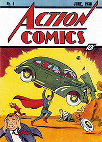
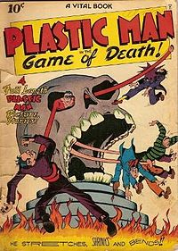

Золотой век комиксов

Action Comics #1 1938 год.
Первое появление Супермена. Данный комикс считается началом Золотого века комиксов
Золотой век комиксов (англ. Golden Age of Comic Books) — название периода в истории американских комиксов, который длился (по разным оценкам) с конца 1930-ых до конца 1940-ых — начала 1950-ых годов. В этот период начали издаваться аналоги современных комиксов, в которых впервые появились одни из самых известных супергероев, среди которых Супермен, Бэтмен, Капитан Америка, Чудо-женщина и Капитан Марвел.
История
Началом Золотого века принято считать первое появление Супермена в комиксе Action Comics #1, вышедшего в 1938 году и изданного DC Comics. Появление Супермена было очень популярным, и вскоре супергерои буквально заполонили страницы комиксов. В период между началом 1939 года и концом 1941 годов DC и её дочерняя компания All-American Comics создали таких популярных супергероев, как Бэтмен и Робин, Чудо-женщина, Флэш, Зелёный Фонарь, Аквамен и других, в то время, как компания Timely Comics, предшественник сегодняшней Marvel Comics, выпускала хорошо продаваемые серии комиксов с такими персонажами, как Человек-факел, Нэмор и Капитан Америка.

Обложка комикса Plastic Man #1, 1943 год. Пластический человек был одним из самых популярный персонажей Золотого века.
Хотя персонажи DC Comics и Timely Comics являются самыми известными персонажами того времени, согласно цифрам, самой продаваемой серией комиксов того периода стала серия о Капитане Марвеле компании Fawcett Comics. Было продано около 1,4 млн экземпляров, что сделало его самым широкораспространенным комиксом в Америке. Продажи Капитана Марвела уверенно побили даже Супермена, который в то время принадлежал Action Comics. Другой персонаж, который долгое время оставался популярным, был Пластичный Человек, издаваемый издательством Quality Comics, а так же детектив Спирит под авторством карикатуриста Уилла Айснера, который первоначально выходил в качестве дополнения, объединенного с воскресным выпуском газеты.
Вторая мировая война сильно повлияла на комиксы, в частности на комиксы о супергероях, которые приобрели огромную популярность во время войны, став дешевым и легкочитаемым способом увидеть победу добра над злом. Сюжетные линии стали связанными с войной: в комиксах супергерои сражались со странами Оси, на обложках часто рисовались герои, дерущиеся с лидером нацистского движения Адольфом Гитлером.
Несмотря на то, что создание супергероев стало главным вкладом комиксов Золотого века в поп-культуру, также выпускались комиксы других жанров: юмор, вестерны, романтика, истории о джунглях. Издание The Steranko History of Comics 2 отмечает, что не супергеройские комиксы компании Dell Comics, в первую очередь, об анимационных персонажах Walt Disney, превышали в то время по объёму продаж комиксы о супергероях. Среди их персонажей были Микки Маус, Дональд Дак, Тарзан, Рой Роджерс и все они продавались тиражами более двух миллионов экземпляров в месяц.
После войны
После окончания второй мировой войны и сброса атомной бомбы, в середине 1940-х содержание комиксов того времени изменилось. Начали появляться супергерои с ядерными способностями, например Атомный Громовержец и Атомный Человек. В сериале «Атомный Человек против Супермена» (англ. Atom Man vs. Superman), Супермен сражался с Атомным Человеком, в то время как слабость Супермена к криптониту напомнила об опасности ядерной радиации. Кроме этих серьезных персонажей, в тот период появились животные с похожими способностями, например Атомная Мышь и Атомный Кролик. Историки того времени говорят, что эти детские персонажи помогли ослабить страх молодых читателей относительно перспектив атомной войны. Так же, герои начала бороться с коммунистами, а некоторые были вовлечены в Корейскую войну.
Окончание периода
После окончания второй мировой войны популярность супергероев пошла на спад, и в попытке сохранить читательскую аудиторию, идательские компании начали вносить разнообразие в выпускаемые комиксы, добавив вестерны, научно-фантастические и хоррор-издания, в результате чего многие серии были отменены:
- Серия Marvel Mystery Comics издательства Timely Comics вместе с персонажем Человеком-факелом закончилась на номере #92 в июне 1949 года; Sub-Mariner Comics — на выпуске #32 в июне 1949 года; Captain America Comics (в то время Captain America’s Weird Tales) прервалась выпуском #75 в феврале 1950 года и трансформировалась в Atlas Comics в выпусках, датированных ноябрём 1951 года.
- All Star Comics #57 издательства DC Comics стал All-Star Western #58 с 1951 года.
- Началом Серебряного века, как правило, считаются более поздние комиксы, начиная с успешных дебютов перезапущенных версий супергероев Золотого века, таких как новый Флэш в выпуске Showcase #4 в октябре 1956 года.